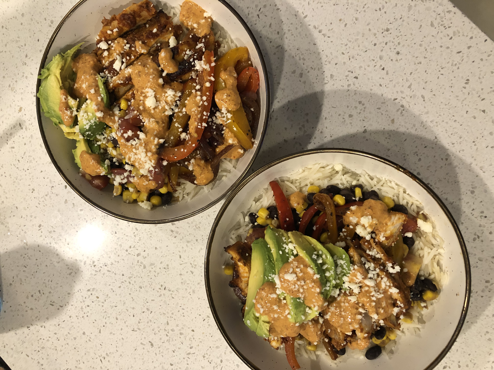

Chipotle is expensive, this bowl is not!
This is pretty much my girlfriend and I's go to meal for those days when we broke af but want something that tastes like we eating out, hope you enjoy
About a pound of chicken breast or thighs
1 can chipotle peppers in adobo sauce
2 bell peppers, any color is cool, get creative
1 can of sweet corn
1 can of black beans
About 1 cup of diced tomatoes
Trader Joes's sweet and spicy Jalapenos (trust me...)
About a qauter cup of mayo
Two tablespoons of honey
One avocado
Cotija cheese (or any cheese of your choice
Cilantro
Salt, pepper, and lemon to taste
- Dump the peppers, honey, and lemon into a blender to create a marinade for the chicken, set aside about a half cup of the marinade
- Add the chicken and refrigerate for about 2-3 hours.
- When you're ready to start, get that rice going
- Cut the bell pepper into strips (or diced, nbd) and add them to a saucepan with the corn, under medium heat
- I like my vegetables cooked until brown, but if you're basic and like them soft, go for it
- Heat the beans separtely, or you can cook them with the peppers
- Now for the pollo; personallly, I think air-frying or grill ing is best, but baking has worked out pretty well for me too. Just make sure its nice and crispy when its done
- Take that marinade you set aside, add the mayo an lemon in a blender and poof, you've got a great sauce to add on top!
- Put it all together, and top with the diced tomato, cotija cheese, cilantro, avocado, and chipotle sauce
Home